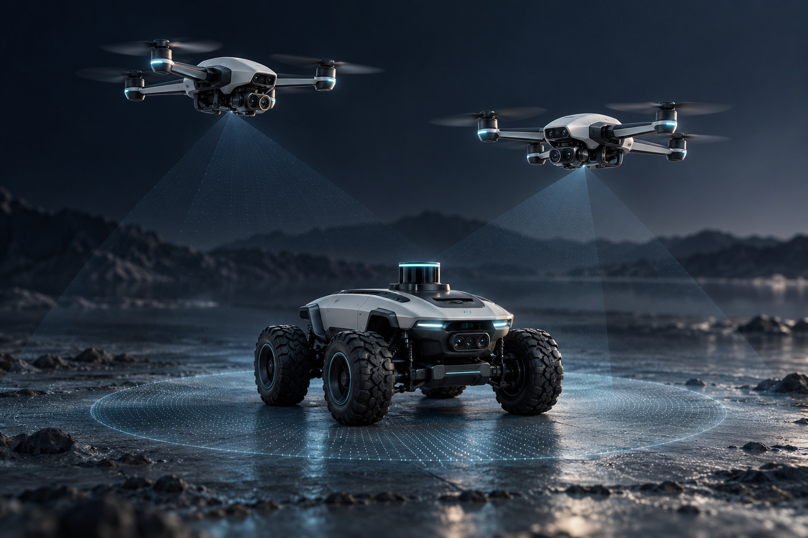
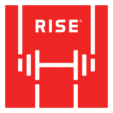

01 / APPLICATION CONCEPT
Robotics · Applied AI · Product development
Product development and hands-on consulting. From emerging technology to deployment and scale.

Application concepts · Explore the four areas

RISE01 / Technical consulting
We work alongside your team on system architecture, technical direction, and product development—from early prototypes to deployment and scale.
Explore RISE Robotics02 / Our first product In development
A clearer view of your options positions. Built to explain tradeoffs, with read-only analysis that never places a trade.
For iPhone and the webWhy ScooriX
We connect advances in robotics and AI with the end-to-end engineering it takes to build useful, dependable products.
Our founding team spans robotics, mathematics, physics, AI, software engineering, and finance.
Have a project in mind?